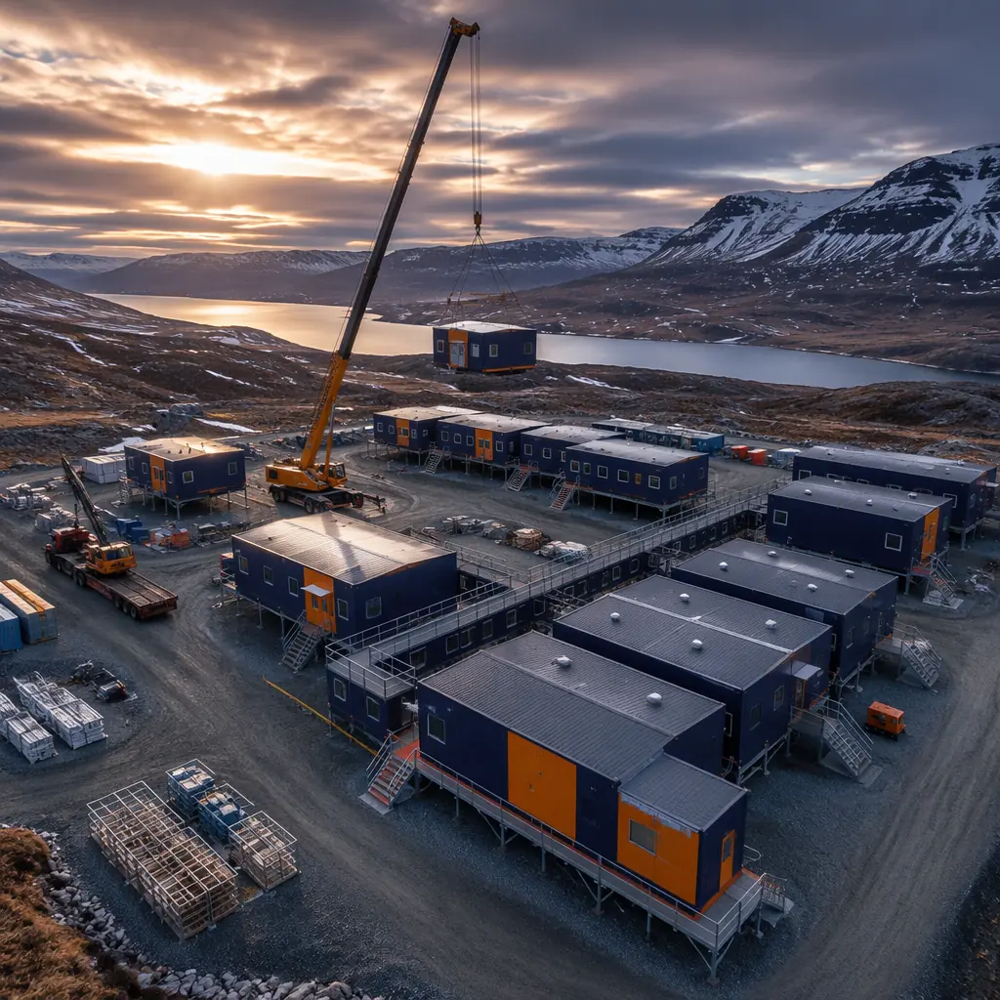
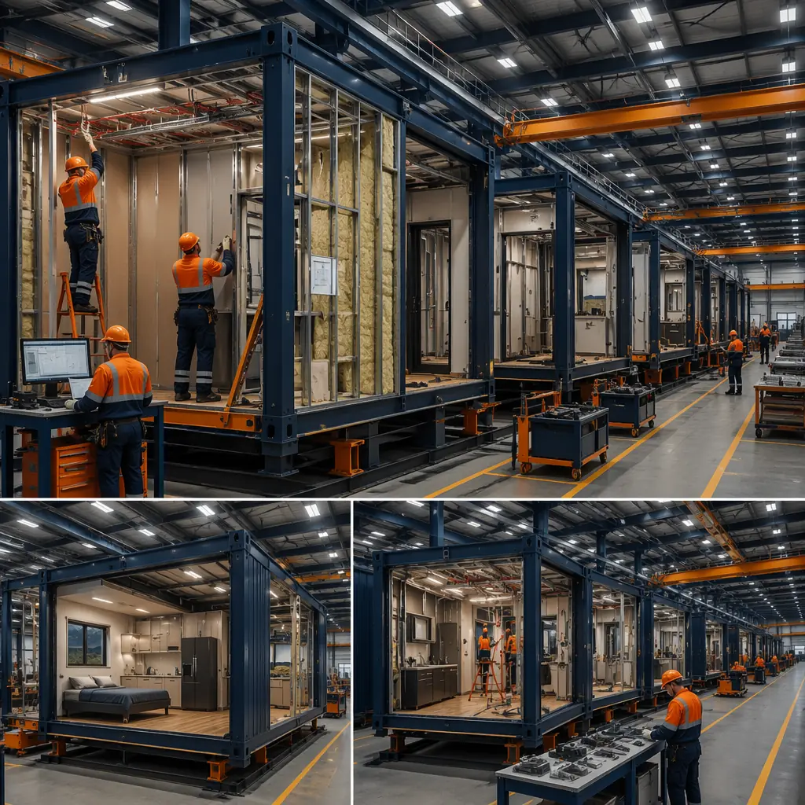
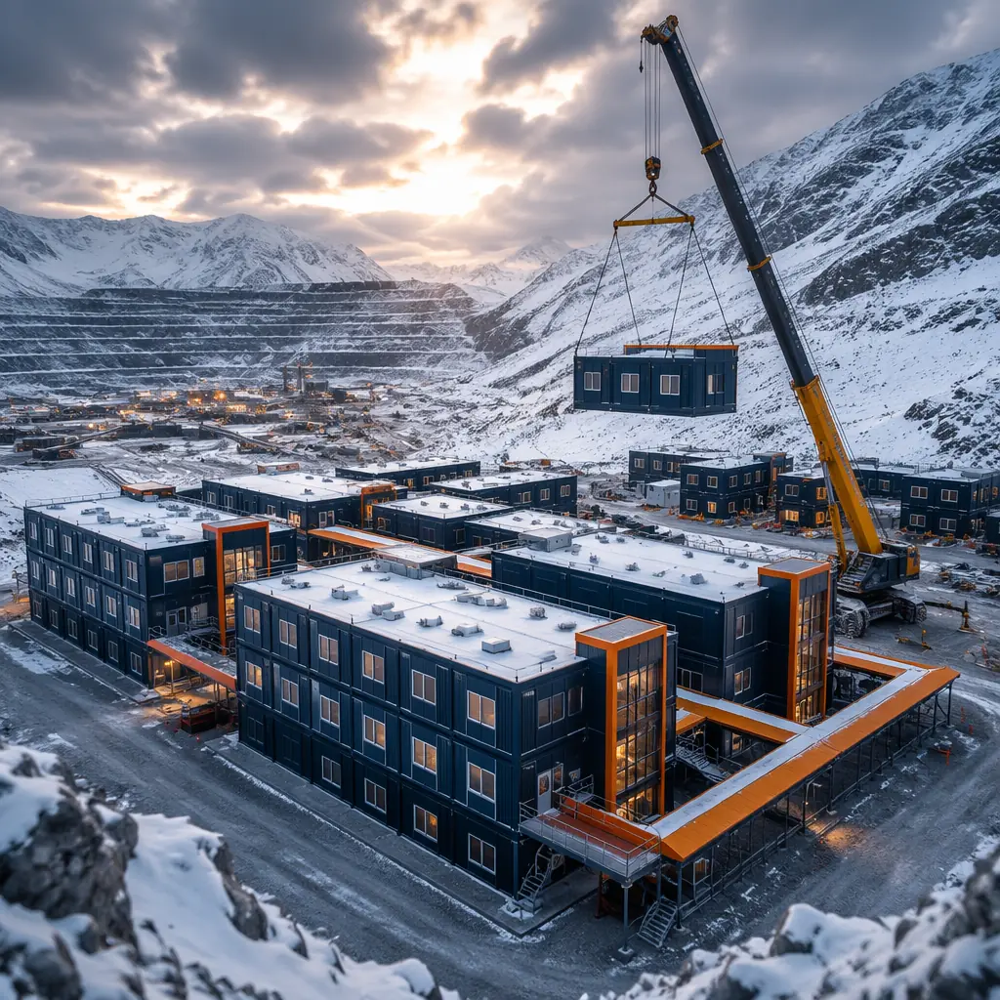
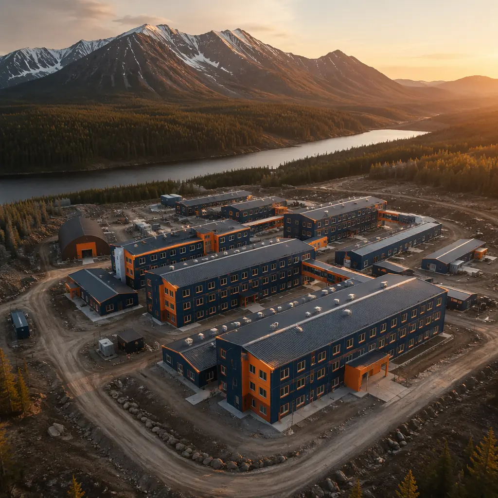

Remote industrial operations face a construction problem that urban developers never encounter: there is no labor market at the project site. When a mining company opens a new site in the Yukon, a pipeline contractor stages a spread camp in northern British Columbia, or an oil and gas operator establishes a field base in the Permian Basin, the construction workforce must be flown in, housed, fed, and supported — alongside the permanent operations staff that will follow. Traditional camp construction means shipping raw materials hundreds of kilometers, flying in tradespeople on rotation, building accommodations in the same weather that makes the site remote in the first place, and accepting that 30–40% of the construction budget will be consumed by logistics and labor mobilization rather than building value. Modular construction inverts this equation: the building is assembled in a factory, where labor is permanent, materials are delivered by the truckload at wholesale rates, and weather does not exist. The completed modules — each a fully finished living unit, kitchen, clinic, or operations center — are then transported to the remote site and craned into position in a fraction of the time.

Why Remote Sites Demand a Different Construction Model
The economics of remote construction are brutal and unforgiving. A typical remote mining camp project faces cost multipliers that urban construction never sees: labor rates at 1.5–2.5× standard due to remote location premiums and rotation schedules; material costs inflated 20–40% by transport to site; productivity losses of 15–30% from weather interruptions, limited daylight hours in winter, and the physical toll of remote work on rotating crews; and a construction window that may close entirely for 3–5 months of the year due to freeze-thaw, mud season, or extreme heat.
Traditional camp construction absorbs all of these multipliers. The sequence is linear and cannot be compressed: mobilize crews to site → construct temporary construction camp (because the workers need somewhere to stay while they build the permanent camp) → pour foundations → frame buildings → install MEP → finish interiors → commission. At a remote site 400 km from the nearest paved road, this sequence typically takes 18–24 months for a 200-person permanent camp — and that is before the mine or processing facility has produced a single ounce of ore or barrel of oil.
Modular construction breaks this linear sequence into two parallel streams. Stream A: the foundation is prepared at the remote site — typically a compacted gravel pad with concrete pile foundations or helical screw piles that can be installed in most weather conditions. Stream B: the camp modules — sleeping quarters, kitchen and dining facilities, medical clinic, recreation center, administration offices, laundry, and warehousing — are assembled simultaneously inside a factory 3,000 km away. The two streams converge when the modules arrive on site: a 200-person modular camp can be set and commissioned in 6–8 weeks after modules reach the site, compared to 12–18 months of on-site construction for the traditional equivalent. For a mining project burning $300,000–500,000 per month in pre-production carrying costs, this schedule compression is not a convenience; it is the difference between a project that reaches production on schedule and one that burns through its contingency before the first shovel hits ore.

Camp Typologies — From Exploration to Permanent Operations
Remote industrial camps are not one-size-fits-all. The camp configuration that serves a 20-person exploration crew mapping a mineral prospect for six months is fundamentally different from the 500-person permanent operations camp that will house mine staff for 15 years. Modular construction accommodates this spectrum through scalable module types that can be configured, expanded, and relocated as the operation evolves.
| Camp Type | Capacity | Typical Modules | Deployment Time (modular) | Deployment Time (traditional) |
|---|---|---|---|---|
| Exploration camp | 10–50 persons | Sleepers (2–4 person), kitchen/diner combo, dry storage, genset module, water treatment | 4–8 weeks | 4–6 months |
| Construction camp | 100–500 persons | Sleepers, full kitchen, dining hall, rec room, clinic, admin offices, laundry, warehousing | 8–16 weeks | 12–18 months |
| Permanent operations camp | 200–1,000+ persons | All of above plus gym, theater, wet mess, expanded medical, maintenance shop, helipad support | 12–20 weeks | 18–30 months |
The modular advantage compounds at larger camp sizes because the factory assembly line produces modules at a rate that is independent of site conditions. A factory producing 6–8 modules per day can complete a 200-person camp (approximately 80–100 modules including all support facilities) in 3–4 weeks of factory production. The site assembly team of 8–12 workers then sets and connects these modules at a rate of 6–10 modules per day, weather permitting. The traditional approach requires a peak site workforce of 60–100 workers — all of whom must be recruited, flown in, housed, fed, and managed at the remote location.
For resource companies that operate multiple sites, the modular camp becomes a capital asset that can be relocated. An exploration camp that supports a 24-month drilling program in one location can be disassembled, transported, and recommissioned at the next prospect — a concept we explore in our guide to modular workforce housing for remote projects. Over a 10-year exploration program spanning four to six sites, the same modular camp can serve all of them, with relocation costs of 15–25% of the original camp cost per move — compared to building a new traditional camp at each site from scratch.

Extreme Climate Engineering — Arctic to Desert
The defining characteristic of remote industrial sites is that they exist in places where the climate is hostile by definition. Mining deposits do not conveniently locate themselves in temperate suburban industrial parks. The copper is under the Atacama Desert. The lithium is in the Andean salt flats at 4,000 meters. The diamonds are 200 km south of the Arctic Circle. The gold is in the Western Australian outback where summer temperatures exceed 48°C (118°F). Each of these environments imposes a different set of engineering requirements on the camp buildings, and each exposes the limitations of site-built construction.
Arctic and sub-Arctic (−40°C to −50°C). Camp modules for extreme cold require R-40+ wall assemblies, typically achieved with 6” steel studs filled with R-24 mineral wool batts and 3–4” of continuous rigid mineral wool exterior insulation (R-12–16), yielding an effective assembly R-value of R-36–40. Triple-glazed windows with argon fill (U-0.15 to U-0.18) prevent condensation at the glass surface when the interior is at 21°C and the exterior is at −45°C. Module-to-module connections use interlocking thermal breaks to prevent frost formation at the joint, and all plumbing runs through heated chases with redundant heat trace and freeze-protection controls. The foundation system uses adjustable steel piers on helical screw piles driven below the permafrost active layer, with insulated skirting to prevent heat transfer from the building to the ground — because thawing the permafrost under a camp building is the fastest way to sink it.
Desert and arid (+45°C to +50°C). The thermal challenge inverts: the building must reject heat rather than retain it. Roof assemblies use high-albedo white membrane (solar reflectance index 100+) to reflect 80–85% of incident solar radiation. Wall assemblies incorporate a ventilated rainscreen cavity behind the exterior cladding to prevent solar heat gain from conducting through to the interior. HVAC systems are sized for 100% outside air with energy recovery ventilators and MERV-13 filtration to handle airborne dust. Window-to-wall ratios are minimized (15–20%) with low-E coatings optimized for solar heat gain coefficient rather than U-factor. All modules include positive-pressure door vestibules to prevent dust ingress when occupants enter and exit — a detail that site-built camps in desert environments routinely omit until the first sandstorm fills every interior surface with fine silica dust.
The factory environment is what makes these climate-specific engineering packages viable. Installing 4” of continuous exterior insulation with full coverage, zero gaps, and documented inspection is routine on a factory floor. Achieving the same quality on a remote site in −30°C with a rotating construction crew is an exercise in wishful thinking. The insulation gets installed — but the gaps, compression, and missing sections that are invisible behind the exterior cladding reduce the effective R-value by 30–40% from design. For an Arctic camp where heating fuel must be trucked or flown in at $1.50–$3.00 per liter, that performance gap translates to $50,000–$150,000 per year in additional heating cost — every year, for the life of the camp.
Deployment Logistics — How Modules Reach Remote Sites
The logistics of delivering 80–100 completed building modules to a site accessible only by seasonal ice road, gravel airstrip, or barge is a supply chain problem that determines whether the modular approach is viable for a given project. The standard module dimensions — typically 12–16 ft wide, 40–75 ft long, and 11–13 ft high for transport — are governed by highway transport regulations in the country of manufacture. In North America, a 16 ft × 70 ft module can travel on most highways with a permitted oversized load escort, though route surveys are required to verify bridge clearances, overhead utility heights, and turning radii at intersections.
For truly remote sites beyond road access, modules move by multimodal transport chains: factory → flatbed truck to port → barge or ship to coastal landing → specialized off-road trailer or ice road to final site. The modular construction transportation logistics are non-trivial — a single module represents a $30,000–$60,000 fabricated asset, and damage during transport is a $30,000–$60,000 problem. Factory-applied protective wrapping, marine-grade strapping points engineered into the module frame, and transport-specific bracing inside the module to prevent finish damage from road vibration are not optional extras; they are the difference between modules that arrive ready to connect and modules that require weeks of repair before commissioning.
The winter road window presents the tightest logistical constraint. An ice road in Canada’s Northwest Territories typically opens for 8–12 weeks between January and March. If the module transport misses that window, the modules wait at the nearest roadhead until the following winter — or the project pays for helicopter or cargo aircraft delivery at 5–10× the cost of truck transport. Modular camp projects in ice-road-accessible locations are therefore scheduled backward from the winter road opening date: factory production completes 4–6 weeks before the road opens, modules are staged at the roadhead, and transport begins on day one of the open window. This is not a logistics plan that can be improvised; it requires a turnkey modular construction partner with experience in remote site logistics and a track record of delivering on schedule.
Camp Infrastructure Beyond Housing
A remote industrial camp is a self-contained small town. The sleeping quarters are the most visible component, but they represent only 40–50% of the total camp footprint. The remaining modules constitute the infrastructure that makes the camp functional: the 200-seat dining hall with a full commercial kitchen capable of producing 600–800 meals per day on a 24-hour rotation schedule; the medical clinic module with examination rooms, a pharmacy dispensary, and emergency stabilization capability for trauma cases that cannot be evacuated for 4–8 hours; the water treatment and wastewater processing modules that convert raw source water to potable standard and treat sewage to environmental discharge compliance; the power generation modules housing 500 kW to 2 MW diesel or natural gas generator sets with redundant N+1 configuration and 72-hour fuel storage; and the communications module with satellite uplink, VHF radio base station, and camp-wide Wi-Fi.
Each of these infrastructure modules is a specialized building type with its own regulatory framework. The kitchen module must meet food service sanitation codes in the jurisdiction of operation. The medical clinic module must comply with occupational health and safety requirements for remote workplaces. The water treatment module must meet drinking water standards (EPA or Health Canada) at the point of use. Site-built camp infrastructure typically addresses these requirements through field improvisation and the judgment of the camp manager. Modular infrastructure addresses them through engineered, pre-certified modules that arrive with documentation confirming compliance before they leave the factory — a distinction that matters when the regulator or the corporate health and safety auditor arrives for an inspection.
Cost Model — Capital vs Operating Economics of Modular Camps
The procurement decision for a remote camp is not a simple capital cost comparison. The full financial analysis must account for construction schedule impact on project timeline, operating cost differentials from climate-specific engineering, and the residual value of the camp as a relocatable asset. The following comparison normalizes to a 200-person permanent operations camp in a sub-Arctic location.
| Cost Factor | Modular Camp | Traditional Site-Built |
|---|---|---|
| Capital cost (modules + transport + set) | $12–18 million | $10–15 million |
| Construction schedule | 4–5 months (total) | 14–20 months |
| Project carrying cost during construction | $1.2–2.5 million | $4.2–10 million |
| Annual heating cost (Arctic) | $80–120K | $150–250K |
| Residual value after 5-year operation | 40–60% (relocatable) | 0–10% (demolition liability) |
| 5-year total cost of ownership | $8–13 million | $15–25 million |
The capital cost premium for modular (15–20% higher upfront) is recovered within the first 12–18 months through schedule compression and reduced carrying costs. Over a five-year project lifecycle, the modular camp’s total cost of ownership is 40–50% lower, driven by three compounding factors: the schedule-driven carrying cost savings, the energy efficiency dividend from factory-engineered thermal envelopes, and the residual value of the camp as a relocatable asset. This analysis does not require optimistic assumptions; it uses mean values from published modular construction ROI data and independent energy modeling for Arctic building assemblies.
The modular mining camp should be evaluated not as a construction cost but as a production-enabling capital asset. The camp that is ready in five months enables the mine to begin production 10–15 months earlier than the camp that takes 18 months to build. At prevailing commodity prices, 10 months of early production can be worth $50–$200 million to the project NPV — making the camp’s construction method one of the highest-leverage procurement decisions the project team will make.
